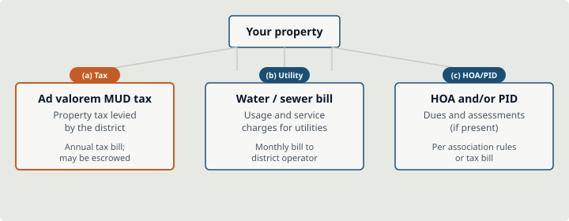

Municipal Utility District (MUD) taxes explained
A Municipal Utility District (MUD) tax is usually an ad valorem property tax levied by the district on taxable property inside its boundaries. It shows up as part of the property tax picture for that parcel. It is not the same thing as your monthly water or sewer bill.
Education only
Tax rates, exemptions, and escrow practices are parcel- and lender-specific. This page teaches concepts and lookup habits. It is not tax, legal, or financial advice.
Three money streams people mix up

| Stream | What it is | How you usually pay |
|---|---|---|
| (a) Ad valorem MUD tax | Property tax levied by the Municipal Utility District | Often on the annual property tax bill; may be escrowed by a lender |
| (b) Water / sewer bill | Usage and service charges for utilities | Monthly (or periodic) bill to the district operator or billing agent |
| (c) HOA and/or PID | Association dues and/or public improvement district assessments (if present) | HOA dues per association rules; PID often via tax bill or assessment process |
Scroll sideways to see all columns
A single address can have (a) and (b), and sometimes also (c). Compare entities on MUD vs PID vs HOA.
What is a MUD tax?
In Texas, “MUD tax” usually means the district’s share of ad valorem taxation. School, county, city (if any), and other jurisdictions may also tax the same property. The Municipal Utility District line is one piece of that stack, not a mysterious “extra fee” invented at closing. Whether people feel it as “extra” depends on what they compared the home to (for example, an older in-city neighborhood with different tax entities).
Does the MUD tax go away?
Short educational answer: do not assume a consumer-friendly “end date” when the tax vanishes.
Municipal Utility Districts commonly use debt (bonds) and annual tax rate setting. As debt is paid and the tax base grows, rates can change over time, up or down, subject to law and board decisions. That is not the same as “MUD tax automatically goes away when bonds mature.” For a specific district, read the Notice to Purchaser, district financial reports, and ask the district or a licensed professional. We will not publish a statewide “typical year it ends” claim.
How to look up the MUD tax for a property
- 1Identify the district for the address (see Find your MUD and the TCEQ Water Districts Map Viewer).
- 2Pull the property’s tax entities from the county appraisal district (CAD) and/or county tax office lookup for that parcel.
- 3Read the current Notice to Purchaser for the district (often on the district website).
- 4Ask your title company and lender how the MUD levy is shown on estimates and whether it is escrowed.
- 5Do not rely on a blog’s “average MUD tax rate.” Your number is local.
Escrow, homestead, and related questions
Are MUD taxes included in property taxes?
Are MUD taxes included in escrow?
Homestead exemptions (process only)
How much is MUD tax?
Video
Video coming from production partner
MUD tax vs water bill vs escrow.
[VIDEO: mud-taxes / explainer]